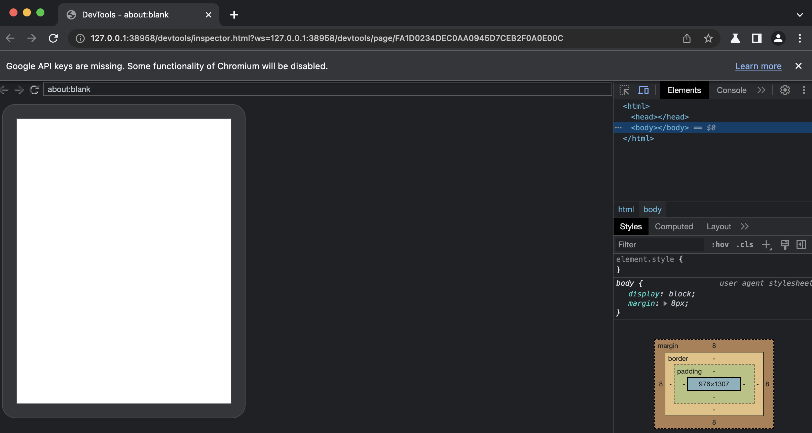
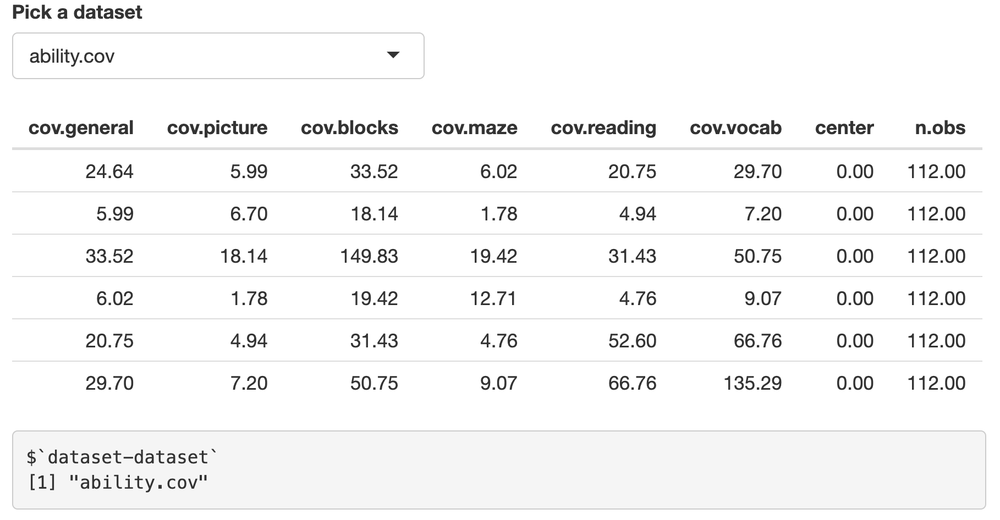
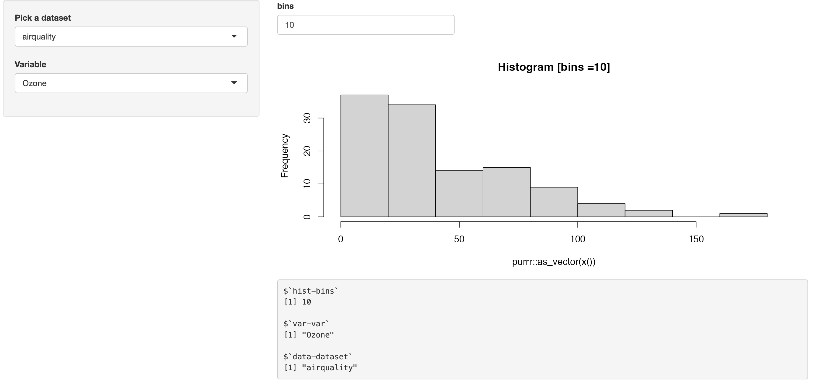
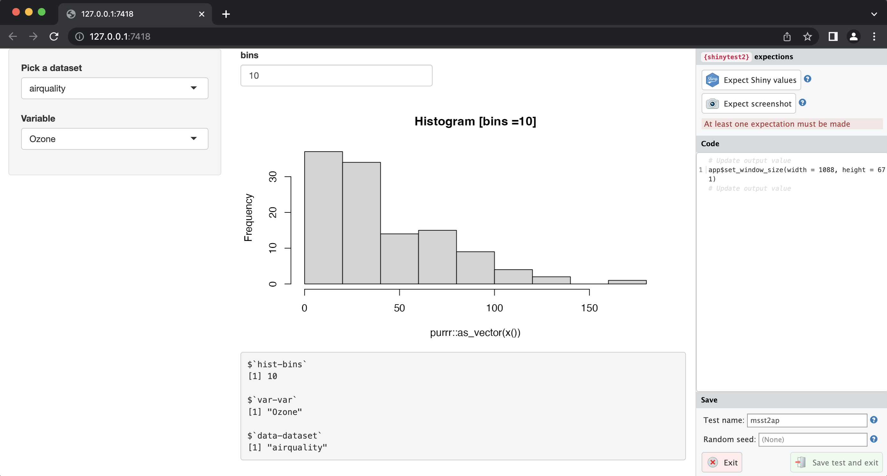
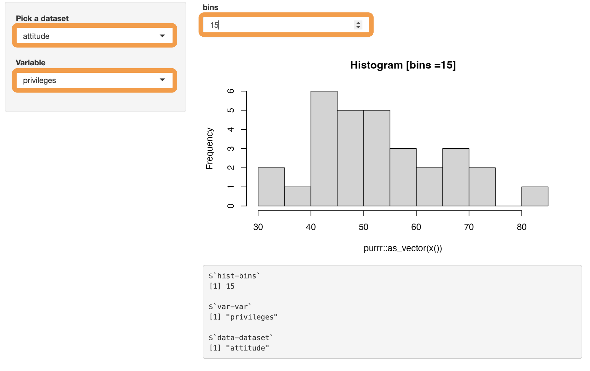

packages
library(testthat)
library(ggplot2)
library(shiny)
library(vdiffr)
library(shinytest2)library(testthat)
library(ggplot2)
library(shiny)
library(vdiffr)
library(shinytest2)This is the fourth post in a series on testing shiny applications. My previous posts have covered unit testing utility functions and testing module server functions with testServer(). In this post, I’ll be covering testing shiny applications using testthat and shinytest2.

shinytest2 requires a few steps to get up and running, so I’ve included my start up steps below (in hopes that someone might find them useful).
First make sure you have Chromium headless browser installed. Chromium is the browser used to test and debug shiny apps with shinytest2.
If you’re using macOS, you can install Chromium using homebrew:
brew install --cask chromium==> Downloading https://download-chromium.appspot.com/dl/Mac?type=snapshots
==> Downloading from https://commondatastorage.googleapis.com/chromium-browser-s
######################################################################### 100.0%
Warning: No checksum defined for cask 'chromium', skipping verification.
==> Installing Cask chromium
==> Moving App 'Chromium.app' to '/Applications/Chromium.app'
==> Linking Binary 'chromium.wrapper.sh' to '/usr/local/bin/chromium'
üç∫ chromium was successfully installed!chromoteThe chromote package allows R to open Chromium. I had to make sure R knew where to find the Chromium application (this section helps) by passing the path to the app to Sys.setenv() (you can locate the path to Chromium using by holding command (⌘) and clicking on the application icon)
remotes::install_github("rstudio/chromote")
library(chromote)
Sys.setenv(CHROMOTE_CHROME = "/Applications/Chromium.app/Contents/MacOS/Chromium")Find your chrome app:
chromote::find_chrome()[1] "/Applications/Chromium.app/Contents/MacOS/Chromium"I also verified the Chromium app opened with ChromoteSession$new()
b <- ChromoteSession$new()
b$view()
Great! Going through this step means shinytest2’s test recorder will (should) deploy when I’m recording tests.
I’ve created msst2ap (i.e., Mastering Shiny shinytest2 app-package), which you can download here or install it using the following:
remotes::install_github("mjfrigaard/msst2ap",
force = TRUE, quiet = TRUE
)
library(msst2ap)The applications in msst2ap can be run with the their standalone app functions.
The modules in msst2ap are from the Modules chapter of Mastering Shiny, with a few minor adjustments.
Each standalone app includes the output from shiny::reactiveValuesToList():
In the ui:
# for printing reactive values in application modules
shiny::verbatimTextOutput("vals")In the server:
# for printing reactive values in application modules
output$vals <- shiny::renderPrint({
x <- shiny::reactiveValuesToList(input,
all.names = TRUE)
print(x, width = 30, max.levels = NULL)
}, width = 30)dataset moduleThe dataset module displays the objects in the datasets package in a selectInput() according to a filter argument (i.e., is.data.frame, is.matrix, etc.).
datasetServer() returns the selected object as a reactive value. Read more here.
datasetInput <- function(id, filter = NULL) {
names <- ls("package:datasets")
if (!is.null(filter)) {
data <- lapply(names, get, "package:datasets")
names <- names[vapply(data, filter, logical(1))]
}
shiny::selectInput(
shiny::NS(id, "dataset"),
"Pick a dataset",
choices = names)
}
datasetServer <- function(id) {
shiny::moduleServer(id, function(input, output, session) {
shiny::reactive(get(input$dataset, "package:datasets"))
})
}datasetApp()datasetApp <- function(filter = NULL) {
ui <- shiny::fluidPage(
datasetInput("dataset", filter = is.data.frame),
shiny::tableOutput("data"),
# for printing reactive values in application modules
shiny::verbatimTextOutput("vals")
)
server <- function(input, output, session) {
data <- datasetServer("dataset")
output$data <- shiny::renderTable(head(data()))
# for printing reactive values in application modules
output$vals <- shiny::renderPrint({
x <- shiny::reactiveValuesToList(input,
all.names = TRUE)
print(x, width = 30, max.levels = NULL)
}, width = 30)
}
shiny::shinyApp(ui, server)
}Below the table output in datasetApp(), the reactive values displays the inputId from datasetInput() and the namespace value from the shared id argument with datasetServer(): $`dataset-dataset`

datasetApp()datasetApp() in msst2apselectVar moduleThe selectVar module selects a numeric variable the data() object returned from datasetServer().
It has a single utility function (find_vars()) which is used to filter the columns (variables):
selectVarInput <- function(id) {
shiny::selectInput(
shiny::NS(id, "var"),
label = "Variable",
choices = NULL
)
}
selectVarServer <- function(id, data, filter = is.numeric) {
stopifnot(shiny::is.reactive(data))
stopifnot(!shiny::is.reactive(filter))
shiny::moduleServer(id, function(input, output, session) {
shiny::observe({
shiny::updateSelectInput(
session, "var",
choices = find_vars(data(), filter))
}) |>
shiny::bindEvent(data())
return(
shiny::reactive({
if (input$var %in% names(data())) {
data()[input$var]
} else {
NULL
}
}) |>
shiny::bindEvent(input$var)
)
})
}I’ve made a few small changes to selectVarServer():
In the original version, input$var is returned as a vector:
reactive(data()[[input$var]])I’ve added some validation and return input$var as a single column from data():
shiny::reactive({
if (input$var %in% names(data())) {
data()[input$var]
} else {
NULL
}
}) The find_vars() function is also below:
find_vars <- function(data, filter = is.vector) {
stopifnot(is.data.frame(data))
stopifnot(is.function(filter))
names(data)[vapply(data, filter, logical(1))]
}selectVarApp()The selectVarApp() extends the dataset module by collecting the returned reactive value, passing it to find_vars(), and returning a single column.
selectVarApp <- function(filter = is.numeric) {
ui <- shiny::fluidPage(
datasetInput("data", is.data.frame),
selectVarInput("var"),
shiny::tableOutput("out"),
shiny::verbatimTextOutput("vals")
)
server <- function(input, output, session) {
data <- datasetServer("data")
var <- selectVarServer("var", data, filter = filter)
output$out <- shiny::renderTable(head(var()))
output$vals <- shiny::renderPrint({
x <- shiny::reactiveValuesToList(input,
all.names = TRUE)
print(x)
})
}
shiny::shinyApp(ui, server)
}
selectVarApp()selectVarApp() in msst2apThe reactive values in selectVarApp() are displayed below the table:
the 1st var is from the inputId in selectVarInput()
$`-var` the 2nd var is the shared namespace id from the selectVar module
$`var-var` dataset is from the inputId in datasetInput()
$`-dataset`data is the shared namespace id from the dataset module
$`data-dataset`selectDataVar moduleselectDataVar is from the Modules inside of modules section, so true to form, both the dataset and selectVar modules are called inside of the UI and Server modules:
selectDataVarUI <- function(id) {
shiny::tagList(
datasetInput(
shiny::NS(id, "data"),
filter = is.data.frame),
selectVarInput(
shiny::NS(id, "var"))
)
}
selectDataVarServer <- function(id, filter = is.numeric) {
shiny::moduleServer(id, function(input, output, session) {
data <- datasetServer("data")
var <- selectVarServer("var", data, filter = filter)
var
})
}selectDataVarApp()The selectDataVarApp() places the inputs in the sidebarPanel() and the outputs in the mainPanel().
selectDataVarApp <- function(filter = is.numeric) {
ui <- shiny::fluidPage(
shiny::sidebarLayout(
shiny::sidebarPanel(
selectDataVarUI("var")
),
shiny::mainPanel(
shiny::tableOutput("out"),
shiny::verbatimTextOutput("vals")
)
)
)
server <- function(input, output, session) {
var <- selectDataVarServer("var", filter)
output$out <- shiny::renderTable(head(var()))
output$vals <- shiny::renderPrint({
x <- shiny::reactiveValuesToList(input,
all.names = TRUE)
print(x)
})
}
shiny::shinyApp(ui, server)
}
selectDataVarApp()selectDataVarApp() in msst2apThe reactive values from selectDataVarApp() reflect the nested module structure:
The first var belongs to the inputId in selectVarInput(),
$`-var` the 2nd var is the shared namespace id from the selectVar module,
$`-var-var`the 3rd var is the call to the selectVar module inside selectDataVar
$`var-var-var`
[1] "Ozone"dataset belongs to the inputId in datasetInput(),
$`-dataset` data is the shared namespace id from the dataset module,
$`-data-dataset` var is the call to the dataset module inside selectDataVar
$`var-data-dataset`
[1] "airquality"histogram moduleThe final modules and application I’ll use from Mastering Shiny are from the Case study: histogram section. This application uses the existing dataset and selectVar modules to pass a single variable to the render a histogram:
histogramOutput <- function(id) {
shiny::tagList(
shiny::numericInput(
shiny::NS(id, "bins"),
label = "bins",
value = 10,
min = 1,
step = 1
),
shiny::plotOutput(
shiny::NS(id, "hist"))
)
}
histogramServer <- function(id, x, title = reactive("Histogram")) {
stopifnot(shiny::is.reactive(x))
stopifnot(shiny::is.reactive(title))
shiny::moduleServer(id, function(input, output, session) {
output$hist <- shiny::renderPlot({
shiny::req(x())
main <- paste0(title(), " [", input$bins, "]")
hist(purrr::as_vector(x()),
breaks = input$bins,
main = main
)
}, res = 96)
output$data <- shiny::renderPrint({
shiny::req(x())
print(head(x()))
})
})
}I’ve made some changes to the histogramServer() function (to accomodate the changes to the selectVar module).
The original renderPlot() call in histogramServer():
output$hist <- renderPlot({
req(is.numeric(x()))
main <- paste0(title(), " [", input$bins, "]")
hist(x(), breaks = input$bins, main = main)
}, res = 96)The updated renderPlot() call in histogramServer():
output$hist <- shiny::renderPlot({
shiny::req(x())
main <- paste0(title(), " [bins =", input$bins, "]")
hist(purrr::as_vector(x()),
breaks = input$bins,
main = main)
}, res = 96)As you can see, req() is verifying x() exists, but doesn’t check it’s class with is.numeric().
x() is also passed to purrr::as_vector() before it’s plotted with hist()
histogramApp()histogramApp <- function() {
ui <- shiny::fluidPage(
shiny::sidebarLayout(
shiny::sidebarPanel(
datasetInput("data", is.data.frame),
selectVarInput("var"),
),
shiny::mainPanel(
histogramOutput("hist"),
shiny::verbatimTextOutput("vals")
)
)
)
server <- function(input, output, session) {
data <- datasetServer("data")
x <- selectVarServer("var", data)
histogramServer("hist", x)
output$vals <- shiny::renderPrint({
x <- shiny::reactiveValuesToList(input,
all.names = TRUE)
print(x)
})
}
shiny::shinyApp(ui, server)
}
histogramApp()histogramApp() in msst2apThe displayed reactive values in histogramApp() are described below:
The inputId from histogramOutput() and the shared namespace id
$`hist-bins`
[1] 10The inputId from selectVarInput() and the shared namespace id
$`var-var`
[1] "Ozone"The inputId from datasetInput() and the shared namespace id
$`data-dataset`
[1] "airquality"shinytest2shinytest2 is extremely well documentation. I highly recommended the Get Started vignette. In the next sections, I’ll cover some examples for what I’ve included in the msst2ap.
Run shinytest2::use_shinytest2() to create the initial files for shinytest2:
shinytest2::use_shinytest2()! Runner already found: tests/testthat.R
✔ Adding 'shinytest2::load_app_env()' to 'tests/testthat/setup-shinytest2.R'
✔ Adding '*_.new.png' to '.gitignore'
✔ Adding '_\\.new\\.png$' to '.Rbuildignore'
✔ Setting active project to '/projects/apps/msst2ap'
✔ Adding 'shinytest2' to Suggests field in DESCRIPTION
• Use `requireNamespace("shinytest2", quietly = TRUE)` to test if package is installed
• Then directly refer to functions with `shinytest2::fun()`
✔ Setting active project to '<no active project>'use_shinytest2() adds the setup-shinytest2.R script to my tests/testthat/ folder:
tests/testthat/
├── _snaps/
└── setup-shinytest2.RThe setup-shinytest2.R file contains a single call to shinytest2::load_app_env(), which “Executes all ./R files and global.R into the current environment”
New tests with shinytest2 can be created by launching the test event recorder, which allows us interact with our application, observe it’s behavior, and record inputs, reactive values, and outputs. To record a test, run shinytest2::record_test().
The first argument in record_test() is the path to application. If you’ve stored your application in an app.R file, record_test() will automatically load that application. In msst2ap, the application in app.R is the histogramApp(), so the test recorder will automatically open with this application if I run record_test() (without providing the path to a shiny app).
shinytest2::record_test()
record_test() with application in app.RIf you have an application is stored in another location (like the inst/dev/ folder), the you can pass the path to record_test():
shinytest2::record_test(app = "")This opens Chromium with our shiny app:

record_test() for datasetApp()The test event recorder displays the shiny app, but also includes a window for recording each application ‘event.’
I’ll start by recording a test for datasetApp(). On the right-hand side of the Chromium headless browser, you’ll see the shinytest2 expectations window:

shinytest2 expectationsshinytest2 expectations in record_test()The initial value in the Code window displays the dimensions of the application in Chromium (app$set_window_size(width = , height = )).
When I interact with the application (i.e., make changes to the inputs), each change is an ‘event’ that is recorded in the test:

All events are recorded as code in the Code section of shinytest2 expectations: